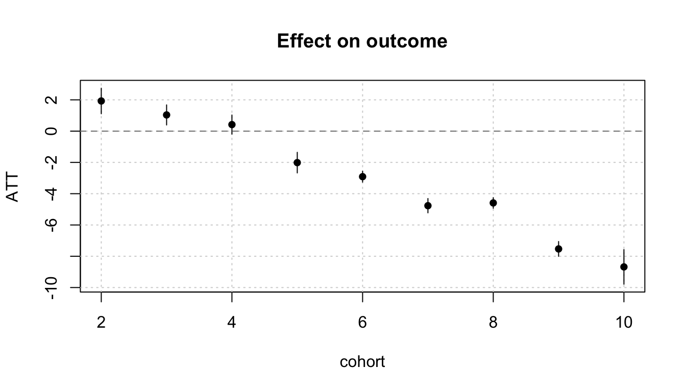

# packages needed:
library(etwfe)etwfe
staggered, absorbing, binary treatment
The extended two-way fixed effects (etwfe) estimator is an estimator used for staggered treatment.
The estimator essentially runs smaller event study DiDs for each different initial treatment period grouping. It also interacts all of these smaller event study variables with confounders.
By interacting so many variables together, the estimator captures all the possible heterogeneity in our study. Then, these heterogenous effects are all weighted together based on how frequent each heterogenous effect occurs. This allows the obtaining of ATT or dynamic causal estimates.
We use the etwfe() function to first conduct all the interactions and estimation of heterogeneity.
mod = etwfe(
fml = outcome ~ covar, # see notes for no covar
tvar = time,
gvar = cohort,
data = df,
vcov = ~ id,
family = NULL # can change to "logit", "negbin", "poisson"
)This completes all the interacting and matching, but we still need to aggregate the effects.
Our dataset df should be a panel or repeated cross-section, and have the following variables:
| Variable | Description |
|---|---|
id |
A variable indicating the units/individual an observation belongs to in our data.* |
time |
A variable indicating time-periods in our study for each observation. |
outcome |
Outcome variable for each observation. |
cohort |
This variable indicates the initial year of treatment adoption for each unit. For the never-treated, we should set the value of cohort to a very large positive/negative value that is outside the range of time. |
covar |
(optional) covariate(s) to condition for parallel trends. |
*For repeated cross-section, the id variable should be instead the group/level of which treatment is assigned. For example, if treatment is assigned by county/state, use that as the id variable.
After completing the matching process, we can aggregate our effects into an overall ATT, dynamic ATTs, and cohort-ATTs.
We can use the emfx() function to aggregate our heterogenous effects into a singular ATT.
mod |> emfx(type = "simple")#>
#> .Dtreat Estimate Std. Error z Pr(>|z|) S 2.5 % 97.5 %
#> TRUE -1.21 0.148 -8.23 <0.001 52.2 -1.5 -0.925
#>
#> Term: .Dtreat
#> Type: response
#> Comparison: TRUE - FALSEThe estimate for TRUE is our ATT, and the p-value is given by Pr(>|Z|).
We can use the emfx() function to aggregate dynamic treatment effects. We can then plot these effects with the plot() function.
mod |>
emfx(type = "event") |>
plot()
Note that etwfe cannot estimate pre-treatment effects.
If we are interested in how the ATT differs by year of treatment adoption, we can also aggregate effects by initial treatment period group. We can then plot these effects with the plot() function:
mod |>
emfx(type = "group") |>
plot()
We can also explore how treatment effects change over calendar time (not relative time, but actual time). We can then plot these effects with the plot() function:
mod |>
emfx(type = "calendar") |>
plot()
Additional Resources
Wooldridge, J. (2021) ‘Two-Way Fixed Effects, the Two-Way Mundlak Regression, and Difference-in-Differences Estimators’. Available at: https://dx.doi.org/10.2139/ssrn.3906345
Wooldridge, J. (2023) ‘Simple approaches to nonlinear difference-in-differences with panel data’, The Econometrics Journal, 26(3), pp. 31-66. Available at: https://academic.oup.com/ectj/article/26/3/C31/7250479?login=false
Additional Links:
Grant McDermott’s vignette on etwfe.
R documentation of the etwfe package.